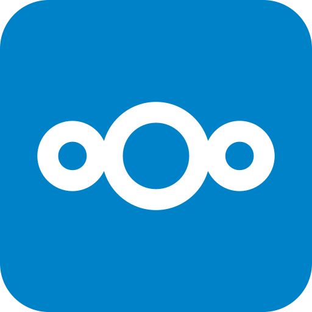

Die C22-Bausteine in ihren Varianten — schalte oben rechts das Design um (hell / ambient / dunkel), jeder Baustein zieht sofort mit. Charge 1: Steuerelemente.
Buttons
Ein Bauplan, Varianten über Modifier (.accent / .ghost / .danger).
Umschalter
Segmentierte Pille mit gleitendem Daumen, Tastatur-bedienbar (Pfeiltasten). Der Theme-Umschalter oben ist derselbe Baustein. S/M/L skaliert die ganze Oberfläche — probier's.
Dritte Achse: Form. Die Rundung ist ein flexibler Wert (nicht nur Stufen):
--radius-scale — 0 % eckig, 100 % normal, mehr = runder. Ein Wert steuert alle Boxen,
die Mechanik bleibt. Und wahlweise je Ecke über --rc-tl/tr/br/bl.
Vertikal · Split („halb links / halb rechts", aktive Hälfte gefüllt):
Toggle-Chip (.switch-2.cycle): zwei Zustände, Klick irgendwo schaltet um — egal ob auf „An", „Aus" oder den Daumen. Der Daumen gleitet links↔rechts.
Icon-Toggle mit geteiltem Daumen (.switch-2.cycle.split-toggle): je Seite ein volles Icon (gedämpft),
der gleitende Daumen zeigt beide Icons je zur Hälfte (an der Mitte zusammengesetzt) und wandert auf die aktive Seite. Klick irgendwo togglet.
Icons
Vierte Look-Achse: Icon-Gewicht. Icons kommen aus Phosphor (MIT) als schlankes Inline-Subset (nur die genutzten, dafür alle Gewichte). data-icon-weight schaltet alle Icons zugleich zwischen thin / light / regular / bold / fill / duotone — Mechanik bleibt, nur der Strich ändert sich. Die Art-Icons stammen aus derselben KIND-Registry (SPOT).
Formulare
Eingaben mit schwebendem Label (kein doppelter Text), nativer Validierung nach dem Prinzip
„reward early, punish late": der Fehler erscheint erst, wenn du das Feld verlässt — und verschwindet
sofort, sobald der Wert stimmt. Auswahl sind native Controls (appearance:none), Formen folgen der Achse.
Checkbox · Radio · Toggle — native Controls, Haken/Punkt animiert:
Tabs
Gleitender Indikator (--x/--w aus offsetLeft/Width, bewegt nur transform/width).
Voll tastaturbedienbar: Pfeiltasten wechseln, Roving-Tabindex. Panel blendet ein.
Der Indikator gleitet zum aktiven Reiter; die Breite folgt dem Text.
Zweiter Reiter — mit den Pfeiltasten wechseln.
Dritter Reiter.
Variante „Reiter" (Browser-/Chrome-Stil): aktiver Tab ist eine Karte mit oben runden Ecken,
sitzt auf der Grundlinie und verschmilzt mit der Inhaltsfläche darunter — gleiche Mechanik, nur .tabs.reiter + .reiter-panels.
Der aktive Reiter deckt die Grundlinie und geht nahtlos in diese Fläche über.
Zweiter Reiter — Karten-Optik wie im Browser.
Dritter Reiter.
Accordion
Echtes Button-Disclosure (aria-expanded/-controls), Höhe animiert über
grid-template-rows: 0fr↔1fr — ohne feste Höhen. data-single hält nur ein Panel offen.
Eine framework-freie Baustein-Bibliothek: reines CSS + minimales Vanilla-JS, kein Build, kein CDN.
Über grid-template-rows — der Inhalt klappt sauber auf 0, ganz ohne gemessene Pixel-Höhen.
data-single schließt beim Öffnen die anderen.
Cards
Karten mit Hover-Lift + Stretched-Link (ganze Fläche klickbar), Media-Fläche über aspect-ratio,
und ein Skeleton-Shimmer als Ladeplatzhalter. Radius folgt der Form-Achse.
Statisch
Ohne Media, nur Text — dieselbe Karte ohne Interaktion.
Chips
Assist · Filter (umschaltbar) · Outline · Input-Chip mit Logo und Entfernen-×. Pillenform folgt der Form-Achse.

NextcloudList
Strukturierte Zeilen: Lead (Icon/Avatar) · Body (Titel + Untertitel) · Trail (Meta/Aktion). Zeilen interaktiv oder ausgewählt.
Divider
Waagrecht, senkrecht, oder mit zentriertem Label.
Abschnitt A
Abschnitt B
Abschnitt C
Progress (linear)
Eigenständiger Balken über das native <progress class="c22-progress"> — determinate, Zustände (ok/bad), dick, indeterminate.
Table
Gezont (.striped), Hover-Zeilen (.hover), rechtsbündige Zahlenspalte (.num), horizontal scrollbar in .table-wrap.
| Dienst | Status | Uptime |
|---|---|---|
| Nextcloud | läuft | 99,9 % |
| Jellyfin | Wartung | 98,2 % |
| Gitea | Fehler | 87,0 % |
Slider
Natives <input type=range> im C22-Stil (Tastatur/ARIA gratis), gefüllte Spur + optionale Wert-Ausgabe.
Dual-Thumb (zwei Griffe, z.B. Preisspanne) — Überkreuzen gesperrt, gefülltes Segment dazwischen:
Media
Responsive Bild/Video-Fläche mit festem Seitenverhältnis (.media.r-16-9 u.a.), optional als <figure> mit Bildunterschrift.
Dropdown / Menü
Nativ über <details> — kein Framework. Schließt bei Escape und Klick außerhalb.
Toasts / Meldungen
Neu-Konzept: ein Toast je Art sammelt mehrere Meldungen statt einer Flut — 3 Fehler → eine Karte mit 3 Zeilen (Kopfzeile „3 Fehler"), dieselbe Meldung nochmal → Zähler. Jede Art trägt Icon + Farbe (Farbsehschwäche, docs/prinzipien.md). Auto-Dismiss (Erfolg/Info) läuft als ablaufende Hintergrund-Füllung, Hover pausiert + blendet sie aus; Warnung/Fehler bleiben. „Alle schließen" sitzt unter den Karten, alles gleitet in der Höhe. API: c22Toast(titel, art, text).
Live auslösen — Position wählen, dann eine Meldung (mehrfach klicken = bündeln):
Diese vier haben eine Notiz — Klick auf den Eintrag klappt sie auf (Link + Button). In der Glocke oben zeigt die History dieselben Notizen hinter dem Doppel-Chevron.
Das Kernkonzept live — dieselbe Karte füllt sich, statt zu fluten:
Banner
Feste Meldung im Layout — schiebt die Seite runter, kein Overlay. Für „steht an, unterbricht aber nicht". Icon + Farbe, schließbar, optional mit Aktion.
Dropdown — Varianten
Richtung wählbar (klappt am Bildschirmrand automatisch um), Auto-open bei Hover mit Schließ-Timer, Trigger ohne Button-Look, Umschalter direkt im Menü.
Popup / Dialog
Modal (Entscheidung, sperrt die Seite) — nativ über <dialog>: Fokus-Falle, Escape und Klick auf den Hintergrund kommen vom Browser. Kein Framework. Für die nicht-sperrende mittige Ankündigung siehe „Mittige Meldung" darunter.
Popup-Meldung
Non-modal — holt die Aufmerksamkeit ins Bild, sperrt die Seite aber nicht. Dahinter liegt der Scrim: rein visuell (pointer-events:none), Blur + weicher Vignetten-Verlauf, blendet mit ein — ein Fokus-Mittel, kein Klick-Fänger. Popups bleiben stehen (Esc/×) — oder schließen sich opt-in selbst mit sichtbarem Countdown ({autoclose:true}, z.B. Erfolg). Notiz (Link/Button) wird direkt gezeigt.
Position ist nur ein Parameter (SPOT): dieselbe Karte + derselbe Scrim, nur die Ausrichtung ändert sich — {pos: 'mitte' | 'oben' | 'unten'}. Der Scrim-Fokus wandert mit.
Varianten: Auswahl-Popup ist modal (c22Confirm, sperrt die Seite, für echte Entscheidungen) · große Custom-Meldung ({size:'gross'}) · Fortschritt läuft gesperrt und löst zu Erfolg/Fehler auf (c22Progress → set/done/fail).
Ein Einstieg, drei Ziele: c22Notify(msg, {target: 'toast'|'popup'|'banner', kind, text, note, sticky}).
App-Benachrichtigungen mit Marken-Logo. Bunte Logos kommen aus selfh.st/icons (CC BY 4.0), nicht aus Phosphor — der Autor reicht sie über icon ein (<img>, gebündelt/self-hosted). Je App eine eigene, gebündelte Karte (app:'name') mit ihrem Logo als Karten-Icon; das neutrale Toast-Symbol bleibt Fallback ohne Logo. Klick → landet in der Glocke oben. Phosphor = Bedienung, selfh.st = Marke.
Gruppierung live: mehrere Meldungen derselben App sammeln sich in einer Karte (Kopf zählt), verschiedene Apps liegen nebeneinander — jede mit eigenem Logo. Meldungen können Hinweise + Links/Buttons tragen (Klick auf die Zeile klappt sie auf).
Navigation
Navbar (optional hide-on-scroll), einklappbare Sidebar (auf Icons), Breadcrumbs und ein Skip-Link (nur bei Tastaturfokus sichtbar). Dazu Kleinkram: Badge, Avatar-Gruppe, Spinner, Pagination.
Tooltip & Popover
Overlay-Engine: ein gemeinsamer Positionierer (placeFloating, Seite/Ausrichtung + Viewport-Flip)
trägt Tooltip (Hover/Fokus) und Popover (native Popover-API: Light-Dismiss + Top-Layer). Dropdown/Popup bleiben
eigenständig und können später hier andocken.
Mehr Inhalt
Ein Popover fasst reichhaltigen Inhalt (Text, Links, kleine Formulare) und schließt bei Klick nach außen.
Menü (Befehle)
Echtes Aktions-Menü (role=menu) — anders als das <details>-Dropdown oben:
Roving-Tabindex (echter Fokus wandert), Pfeiltasten + Home/End, Typeahead (Buchstaben tippen),
Escape schließt und gibt den Fokus zurück, gesperrte Einträge bleiben navigierbar. Positioniert über placeFloating.
Combobox / Autocomplete
Editierbares Feld mit gefilterter Vorschlagsliste (role=combobox + listbox). Der reale
Fokus bleibt im Feld, die Hervorhebung wandert per aria-activedescendant (Virtual Focus). Pfeiltasten/Home/End,
Enter/Tab übernimmt, Escape zweistufig (1. Liste zu, 2. Eingabe zurück), „Keine Treffer" ohne navigierbaren Eintrag.
Scrollbalken
Schlanke, getönte Scrollbalken über .c22-scroll — Chrome/Safari und Firefox.
Grate und Firnfelder, ein Zettel am Wegrand.
Der Wind dreht auf Nord, die Wolken ziehen tiefer.
Am Biwak riecht es nach nassem Fels und Tee.
Zwölf Stunden Aufstieg, ein Gewitter im Nacken.
Die Hüttenwirtin kennt jeden Blick ins Tal.
Steigeisen richten, bevor der Frost kommt.
Ein letzter Blick zurück, dann der Abstieg.
Unten wartet das Tal, oben bleibt die Stille.